| > |
| > | 2+2; |
| > |
| > |

| > | ec1:=diff(y(x),x) = 2*x*(1+y(x)^2); |
| > | s1:=dsolve(ec1,y(x)); |
| > |
| > |
| > | a:=rhs(s1); |
| > | b:=unapply(a,x,_C1); |

| > | plot( [ b(x,1), b(x,2)], x=-2..2, y=-10..10, color=[red,blue] ); |
![[Maple Plot]](images/l23.gif)
| > | ec2:= (x^2-1) * diff(y(x),x) + 2*x*y(x)^2 = 0; |
| > | s2 :=dsolve(ec2, y(x)); |
| > | a:=rhs(s2); |
| > | b:=unapply(a,x,_C1); |

| > | plot( [b(x,1), b(x,2)], x=-2..2, y=-10..10, color=[red, blue]); |
![[Maple Plot]](images/l25.gif)
| > | ec3 := 2*x^2*diff(y(x),x) = x^2 + y(x)^2; |
| > | s3:=dsolve(ec3, y(x)); |
| > | a:=rhs(s3); |
| > | b:=unapply(a,x,_C1); |
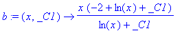
| > | plot( [b(x,1), b(x,2)], x=-2..2, y=-10..10, color=[red,blue] ); |
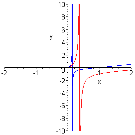
| > | ec4:= diff(y(x),x) = -(x/y(x)); |
| > | s4 := dsolve(ec4, y(x)); |
| > | a1 := rhs(s4[1]); |
| > | a2 := rhs(s4[2]); |
| > | b1:=unapply(a1,x,_C1); |
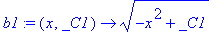
| > | b2:=unapply(a2,x,_C1); |
| > |
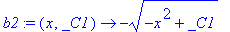
| > | plot( [b1(x,1), b1(x,2)], x=-2..2, y=-10..10, color = [red, blue] ); |
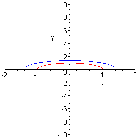
| > | plot( [b2(x,1), b2(x,2)], x=-2..2, y=-10..10, color = [red, blue] ); |
![[Maple Plot]](images/l211.gif)
| > | ec5 := diff(y(x), x, x) + y(x) = sin(x) + cos(x); |
| > | s5:=dsolve(ec5, y(x)); |
| > | a := rhs(s5); |
| > | b := unapply(a,x,_C1, _C2); |

| > | plot( [ b(x,1,1), b(x,2,2)], x=-2..2, y=-10..10, color = [red,blue]); |
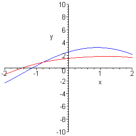
| > | ec6:=diff(y(x),x,x) - y(x) = exp(2*x); |
| > | s6 := dsolve(ec6, y(x)); |
| > | a := rhs(s6); |
| > | b := unapply (a,x,_C1, _C2); |

| > | plot( [ b(x,1,1), b(x,2,2)], x=-2..2, y=-10..10, color = [red,blue]); |
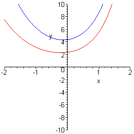
| > | ec7 := diff(y(x),x,x) + 4*y(x) = 1/(cos(2*x)); |
| > | s7 := dsolve(ec7, y(x)); |
| > | a := rhs(s7); |
| > | b := unapply(a,x,_C1, _C2); |

| > | plot( [b(x,1,1), b(x,2,2)], x=-2..2, y=-10..10, color = [red, blue]); |
![[Maple Plot]](images/l217.gif)
| > | ec8:= diff(y(x),x,x) - diff(y(x),x) = 1/ ( 1+exp(x)); |
| > | s8 := dsolve(ec8, y(x)); |
| > | a := rhs(s8); |
| > | b := unapply(a,x,_C1, _C2); |

| > | plot( [b(x,1,1), b(x,2,2)], x=-2..2, y=-10..10, color = [red, blue]); |
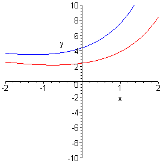
| > | e1:= diff(y(x), x) = 1+ y(x)^2; |
| > | cond := y(0) = 1; |
| > | sol1 := dsolve( {e1, cond}, y(x)); |
| > | a := rhs(sol1); |
| > | b := unapply(a,x); |

| > | plot( b(x), x=-2*Pi..2*Pi, y=-20..20); |
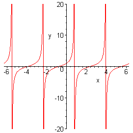
| > | e2 := diff(y(x), x) = (1/(1-x^2)) * y(x) + 1 + x; |
| > | cond := y(0) = 0; |
| > | s2 := dsolve( {e2, cond}, y(x) ); |
| > | a:= rhs(s2); |
| > | b := unapply(a,x); |

| > | plot( b(x), x=-4..4, y=-10..10); |
![[Maple Plot]](images/l223.gif)
| > | e3 := diff(y(x), x,x) - 5*diff(y(x),x) + 4 * y(x) =0; |
| > |
| > | cond := y(0) = 5, D(y)(0) = 8; |
| > | s3 := dsolve( {e3,cond}, y(x)); |
| > | a := rhs(s3); |
| > | b := unapply(a,x); |

| > | plot( b(x), x=-2..2, y=-10..10); |
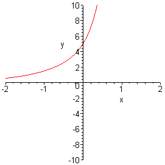
| > | e4 := diff(y(x), x$2) - 4*diff(y(x),x) + 5*y(x) = 2*x^2*exp(x); |
| > | cond := y(0)=2, D(y)(0)=3; |
| > | s4 := dsolve( {e4, cond}, y(x) ); |
| > | a := rhs(s4); |
| > | b := unapply(a,x); |

| > | plot( b(x), x=-2..2, y=-10..10); |
![[Maple Plot]](images/l227.gif)
| > | ec := diff(y(x),x) + (k/x)*y(x) = x^3; |
| > | s := dsolve(ec, y(x)); |
| > | a := rhs(s); |
| > | b := unapply(a,x,k,_C1); |

| > | plot( b(x,1,1), x=-2..2, y=-10..10); |
![[Maple Plot]](images/l229.gif)
| > | with(DEtools); |
| > | k:=1; |
| > | DEplot(ec, y(x), x=-5..5, y=-10..10, stepsize =0.1); |
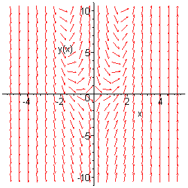
| > | k:=1; |
| > | ec := diff(y(x),x) + (k/x)*y(x) = x^3; |
| > | cond := y(1) =0; |
| > | s := dsolve( {ec, cond}, y(x)); |
| > | b := unapply(rhs(s),x); |

| > | plot( b(x), x=-2..2, y=-10..10); |
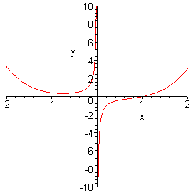
| > |
Maple
TM is a registered trademark of Waterloo Maple Inc.
Math rendered by
WebEQ